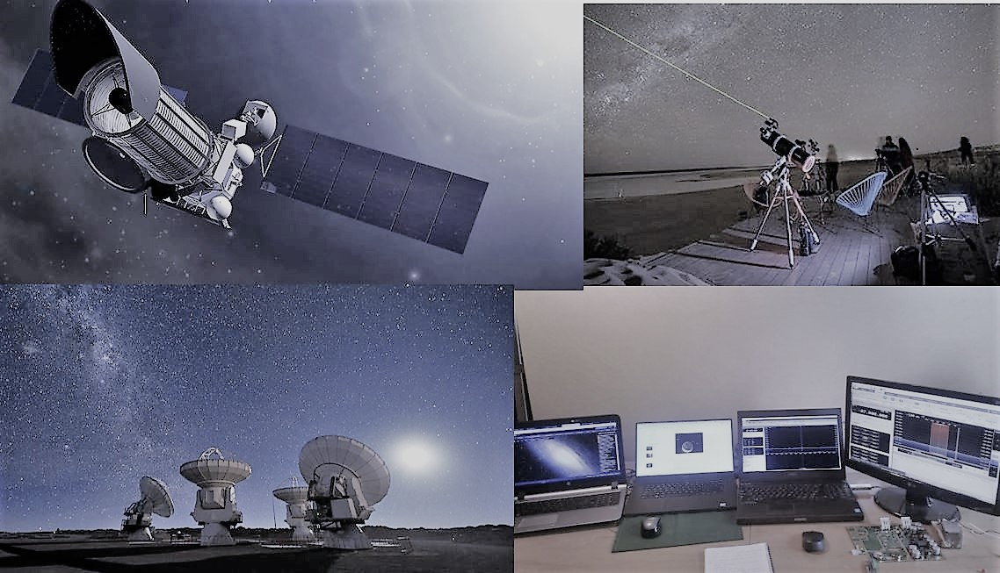

<div class="span8">
    <article class="post">
        <div class="row">
            <div class="span8">
                <h1 style="color: blue">Astronomía
                </h1>
                <p>El cielo estrellado nos ha llenado de admiración y admiración durante siglos. Realice un viaje de descubrimiento en el cosmos con COAME, desde las constelaciones del hemisferio sur hasta galaxias distantes. La información actual y en profundidad
                    sobre los eventos celestes son las herramientas para los principiantes en la observación del cielo, así como para los astrónomos experimentados. COAME te acompaña a través de la noche, viajando a las estrellas y explorando los secretos
                    del universo.
                </p>
                <div>
                    
                </div>
            </div>
        </div>
    </article>
</div>